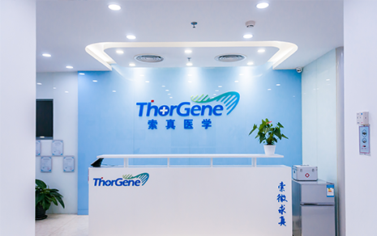

关于我们
索真医学致力于融合大数据分析、液体活检、肿瘤免疫治疗等前沿新兴科技，提供科学专业的分子诊疗及科学研究服务方案。公司聚焦于肿瘤精准医疗，并提供覆盖全生命周期的健康服务，包括疾病风险评估、安全用药、治疗方案和健康指导等方方面面。
索真医学拥有业界顶尖、多学科交叉的专家团队，已完成北京亦庄研发总部、临床医学检验所、南京大数据分析中心、苏州设备研发基地的多中心建设，深入进行产业链上下游完整布局。目前，公司的健康人群全基因检测与肿瘤基因数据分析量位居全国前列，业务覆盖全国各省市及以协和医院为首的数十家顶级三甲医院。
技术优势
{{ v.name }}
{{ v.title}}
{{ v.text }}